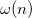
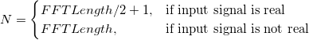
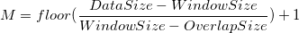

非定常信号は、その統計特性が時間によりさまざまな変化します。これまでのフーリエ変換は時間に対してはこのような、周波数がどのように変化しているかの情報を提供することができないので、あまり適していません。ですので、STFTのような時間－周波数分析が代わりに使われます。
短時間フーリエ変換 (STFT)は、非定常な信号に対して使われる分析方法です。時間と共に移動するウィンドウでいくつかのフレームを抽出するものです。時間ウィンドウが十分狭いと、抽出した各フレームは定常であると見なすことができるので、それに対してフーリエ変換を使うことができます。時間軸に沿ってウィンドウを移動し、時間と周波数の変化の関係が識別できます。
シーケンス {ix(n)} で実行するSTFTは次のように定義できます。

ここでは、その範囲内で局所的な周波数成分を強調するスライドウィンドウです。
STFTの結果は、N行M列の行列で以下のようになります。

および

選択したウィンドウ法によって、分析の結果に影響を与えます。ユーザは結果のウィンドウの大きさと形状に注意する必要があります。
ウィンドウのサイズは、STFTの時間解像度と周波数の時間解像度に関連します。ウィンドウを短くすると、時間解像度が高くなります。しかし、これは通常低い周波数解像度に対して行われます。長いウィンドウに対しては、周波数解像度は高いですが、時間解像度は低くなります。この現象は、Heisenbergの不確実性の原理を表しています。
異なるウィンドウの形状は、異なる結果となり、Originは特別なニーズのために、9個までの異なるウィンドウを提供しています。
ウィンドウの重なった部分のサイズを考慮することは重要です。例えば、大きさがゼロでない重なり部分は、通常、隣り合うデータ枠間の変化の検出の助けとなります。しかし、計算時間が長くなります。重なりの大きさは、また、STFTの結果の行列にも関連します。
FFT区間の大きさがウィンドウサイズより大きいと、各ウィンドウのデータセグメントの両側に0が付加されます。これは一般的には周波数解像度を大きくします。
結果からイメージグラフを作成すると、時間に対してどのように周波数が変化したのかをより明確に見ることができます。
STFTの有効性は、固定した解像度となるので、制限があります。ウェーブレット変換のような多解像度分析は、いくつかのアプリケーションに対して、信号解析を向上させるために実行する必要があります。
STFTを使うには
|
このセクションのトピック: |